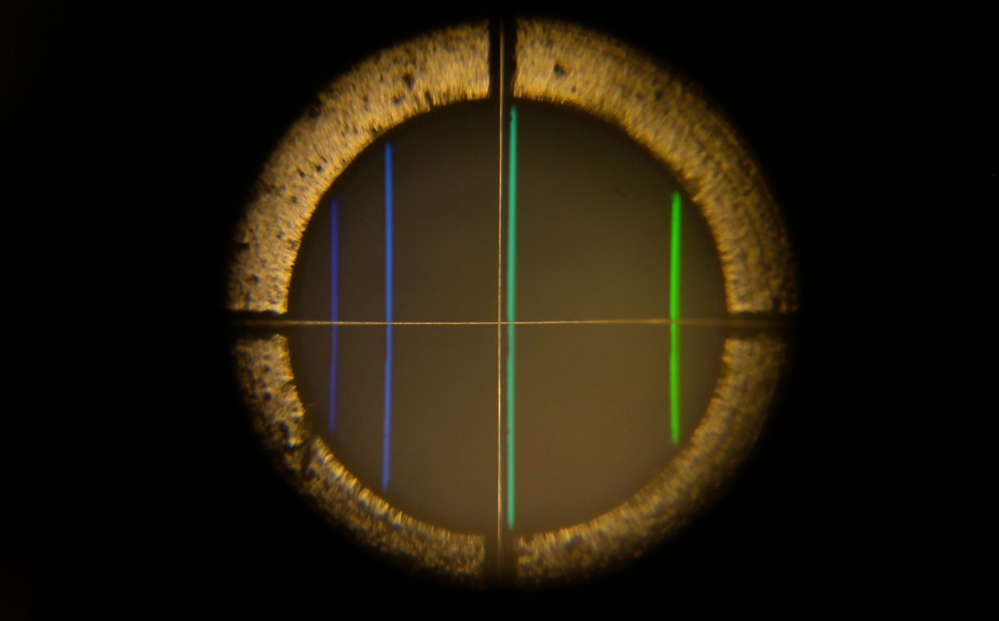
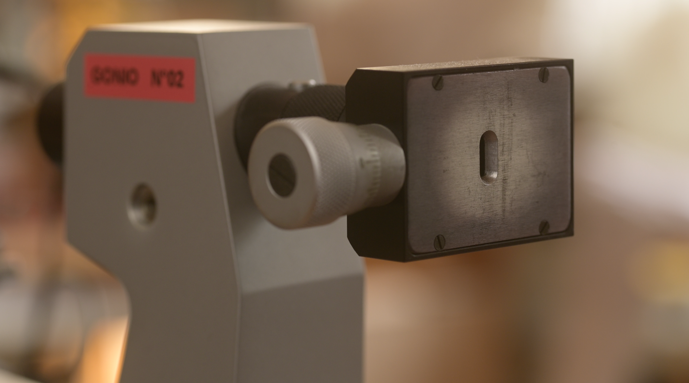
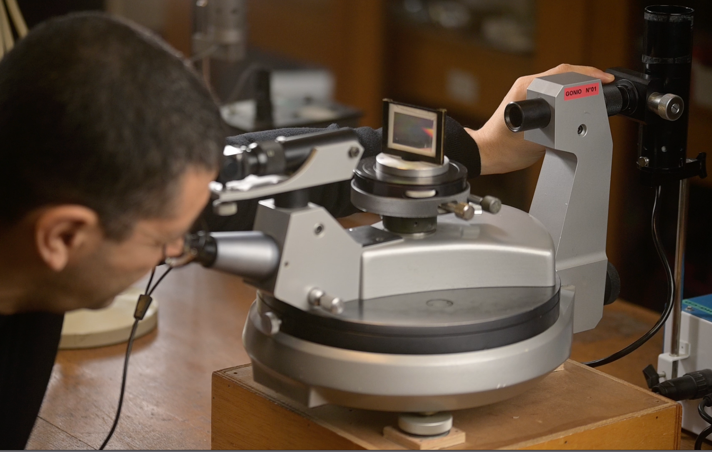

Le spectromètre à réseau
Épisode 2
Viser avec précision : collimateur et lunette.
- I - Régler l'oculaire de la lunette
- II - Régler l'objectif de la lunette
- III - Régler le collimateur
Problème posé
- Qu'est-ce qu'une visée ?
Superposer l'image du réticule et l'image de la source en exploitant au mieux les extraordinaires pouvoirs de l'oeil comme détecteur de contraste.

- Plan du réticule et plan de la fente source
Le plan du réticule dans la lunette et le plan de la fente source de lumière, se situent dans des plans transversaux différents sur l'axe optique du système qui est aussi l'axe optique de notre cristallin lorsque l'on se place en position pour viser.

Sur le plan de ma rétine, il ne peut donc pas se former simultanément une image nette du réticule et de la lunette.

En effet, si je fais le point sur sur l'index de ma main droite, l'index de ma main gauche est nécessairement flou et réciproquement, si je fais le point sur l'index de ma main gauche alors l'index de ma main droite est nécessairement fou. Dans aucun de ces deux cas de figure, je ne peux viser avec précision, au sens défini précédement.
- Rôle de la lunette de visée
Pour que les images à travers la lunette du réticule et de ma cible éloignée m'apparaissent nettes simultanément, il faut que ces deux images se situent dans le même plan transversal par rapport à l'axe optique de mon cristallin.
Le rôle de la lunette est donc :
- de donner d'un objet à l'infini, une image à l'infini, on dit que la lunette doit être un système afocal ;
- de donner du réticule une image à l'infini également.
Comme objet, le réticule se situe dans le plan intermédiaire de la lunette. Le tirage de l'oculaire permet de renvoyer son image à l'infini.
Le tirage de son objectif permet de renvoyer l'image de l'objet lointain à l'infini.
- Rôle du collimateur
Le collimateur va donner de la fente source une image qui semble venir de l'infini.
Collimater veut également dire que le système va, de fait, sélectionner parmi tous les rayons émis par la source, ceux qui sont peu éloignés de et peu inclinés sur son axe optique.
- 3 réglages à faire pour 1 critère de réussite
Dans l'ordre, du plus près de soit au plus éloigné, en utilisant le même oeil pour les trois étapes, on règlera le tirage de l'oculaire de la lunette, le tirage de l'objectif de la lunette, le tirage du collimateur.

Le réglage sera réussi si on peut voir les deux images du réticule et de la fente nettes en même temps et sans accomoder.
Si une image apparaît nette alors que l'autre est flou, ou s'il faut accomoder pour voir nette une des deux images, le réglage est à refaire.